Upgrade to Vacuum Module (Configuration 3) Quad-Head Pump for Serial #00280 and Below
Parts and Materials Required
- VACUUM PUMP, QUAD HEAD
Time Required
- 90 Minutes
Procedure
Section 1: Prepare for Quad Head Pump Module Installation.
- Remove the Vacuum Pump Module following the instructions below.
- Prepare the old vacuum pump for disposal as per 19-06-01-SOP Service Parts Return Procedure.

Note—Non-repairable pumps can be scrapped on site if permitted by local requirements. If parts cannot be scrapped locally for any reason, they can be returned to Hologic for proper disposal. Contact Service Logistics for third party logistics providers that may be able to assist with disposal and recycling services. - Uncrate the Stratec Quad Head Vacuum Pump Module.
- Place absorbent pads on a benchtop or flat work surface.
- Place the new Stratec Quad Head Vacuum Pump module on the work surface
Section 2: Installing the Stratec Quad Head Pump Module
|
|
Note—The Quad Head Vacuum Pump kit includes all parts required to complete the installation. |
- Remove the Quad Head Pump from the housing.
 Cut the cables ties securing the vacuum tubing to the assembly as shown below.
Cut the cables ties securing the vacuum tubing to the assembly as shown below.
Note—The pattern of vacuum tube routing and securing may vary from the pictures below.
The vacuum tubing will be routed out the upper vent of the Startec box.
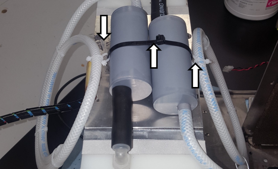
- Reroute the vacuum tubes as shown below and secure with cable ties.
Note—Two cable ties are linked to wrap a vacuum tube to the mufflers. 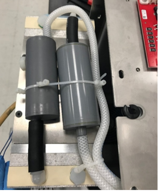
- Pass the vacuum tubing through the upper vent of the Stratec box.
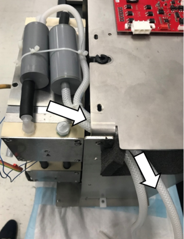
- Reinstalled the Quad Pump into the housing.
Note—If the screw holes between the bottom of the Stratec box and the Quad Head Pump feet do not align, manually adjust and hold each foot to align screw holes. 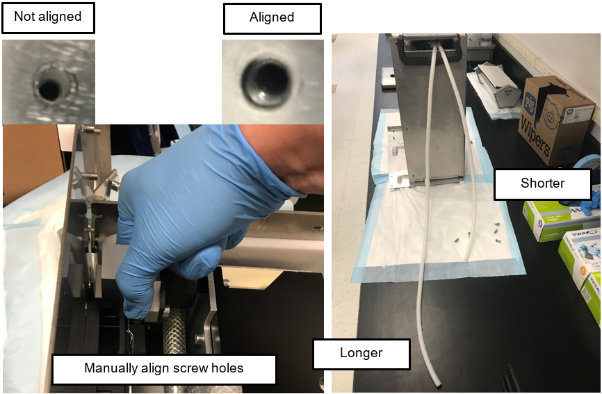
- Looking at the interior back wall of the Panther Chassis, locate the square opening behind the Vacuum Module and the round hole behind the Cooling Module.
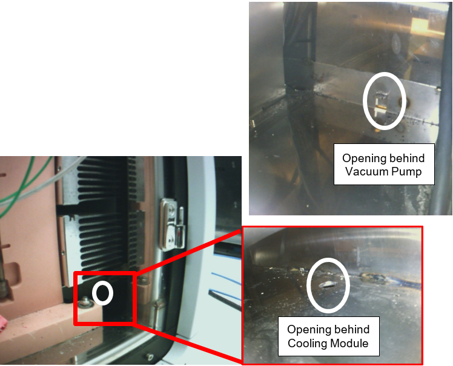
- Place the new Stratec Quad Head Vacuum Pump Module into the lower bay of the system.
- As you slide the Vacuum Module into the system, guide the longer vacuum tube (green arrow) through the hole behind the Cooling Module and the shorter vacuum tube (red arrow) through the square opening behind the Vacuum Module.
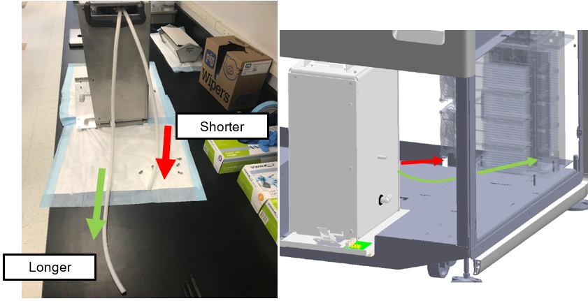
- Route the vacuum tubing through the square opening on the back wall behind the Vacuum Pump and the rough hole on the floor plate behind the Cooling Module.
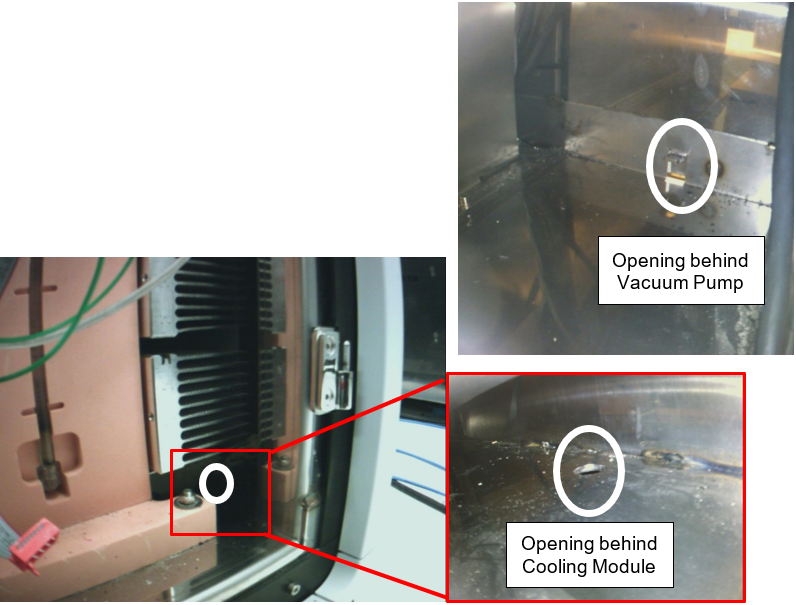
- Leave 4 inches of vacuum tubing exposed from the back of the system.
- Take off the cable chase cover and remove the old power cable from the cable chase. Discard the old cable.
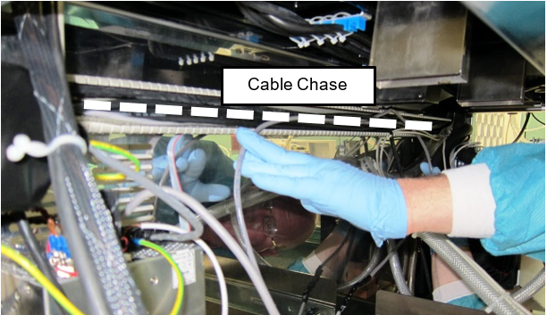
- Secure the new power cable/Red PCB onto the 24V power supply. [CBL-02862]
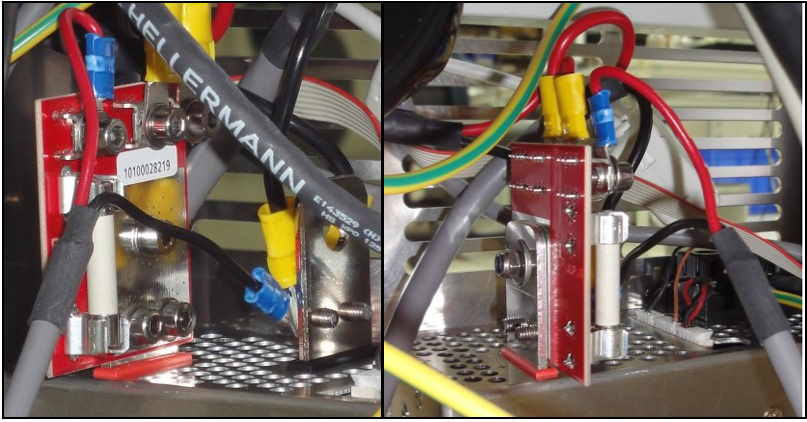
Note— Use the image below as a reference for power connections.
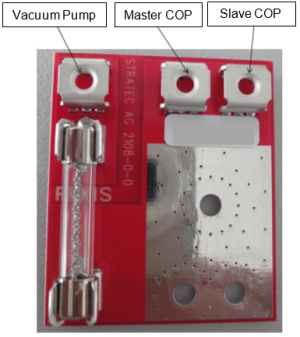
- Run the new power cable across the back of the cable chase to the vacuum housing.
Note—Use the same route as the previous power cable. - Reinstall the cable chase cover.
- Slide the new vacuum module into the system.
- Connect the vacuum line to the fitting on the bottom of the new module when there is enough slack.
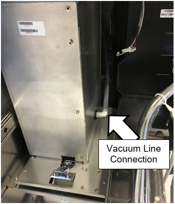
- Connect the new power cable to the PCB on top of the vacuum housing. [CBL-02862]
- Plug the new signal cable into the Cooling Module PCB. [CBL-02935]
- Plug the other end of the signal cable into the Red PCB on top of the vacuum housing.
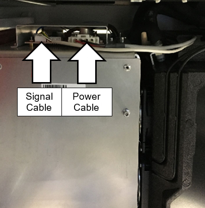
- Slide the module into the system and latch in place.
Note—Check to make sure no hoses are pinched (Cooling Module and Vacuum)
Verification
- Power on the Panther System and PC.
- Log in to the FSE shield.
- Open the Service Software.
- Initialize the Vacuum.
- Activate the Vacuum & Read the Vacuum pressure.
- Verify the vacuum is within specifications.
The vacuum level must read between -203mbar and -270mbar and the vacuum pump speed must read above 1650rpm.
If needed refer to Configuring the Quad Head Vacuum Pump Speed. - Exit Service Software.
- Start Panther Main.
- Check Vacuum in Panther Main.
- Prime Operation of pumping fluid through tubing to ensure proper and consistent fluid delivery (remove air from the tubing, etc.). the system.
- Verify the Vacuum is within Specification.
- Verify that exhaust is flowing through the routed tubing.
- Shutdown and restart the Panther System and PC in Customer Mode and return to customer.
 button at the top of the page to send feedback, comments, or change requests.
button at the top of the page to send feedback, comments, or change requests.